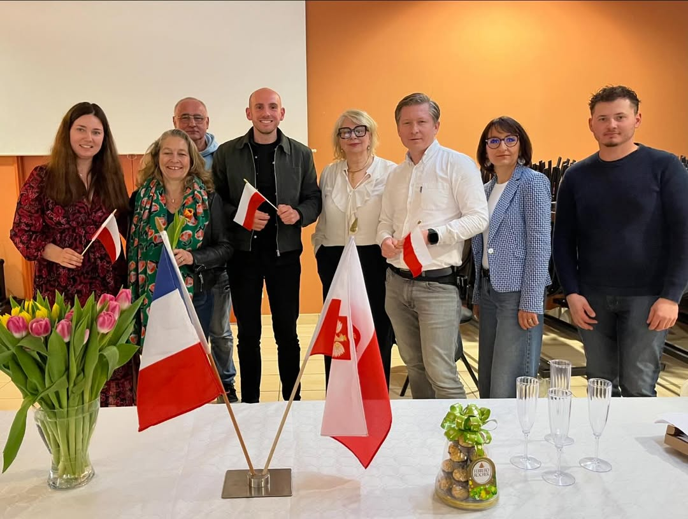

Bienvenue !
Bienvenue à l’Association Polonia Caen Normandie – un lieu de rencontres, d’échanges et de coopération pour la communauté polonaise et tous les amis de la Pologne en Normandie.
Notre objectif : créer du lien, mettre en valeur la culture polonaise et encourager l’intégration grâce à des événements, des ateliers et des initiatives citoyennes.
Rejoignez-nous et contribuez à une communauté ouverte, active et solidaire.
Qui sommes-nous ?
L’association Polonia Caen Normandie, fondée le 31 janvier 2026 à Caen, a pour mission de rassembler la communauté polonaise et de promouvoir les échanges culturels entre la France et la Pologne.
Nous organisons :
- des événements culturels et festifs
- des rencontres et activités d’intégration
- des ateliers éducatifs et linguistiques
- des initiatives sociales et solidaires
Nos valeurs reposent sur le respect, la bienveillance, la coopération et l’ouverture à tous. L’association est gérée par un bureau élu, engagé dans le développement de projets durables pour la communauté locale.
Mission régionale
Implantés à Caen, nous agissons pour l’ensemble du département du Calvados et plus largement pour toute la Normandie, en accompagnant la Polonia et les amis de la Pologne dans chaque territoire.
Notre équipe
Le bureau de Polonia Caen Normandie réunit des bénévoles aux parcours complémentaires : entrepreneuriat, culture, éducation, solidarité… Ensemble, nous imaginons et coordonnons les projets qui font vivre la communauté.
Nous collaborons avec des partenaires locaux et des structures associatives pour amplifier l’impact de nos actions et offrir un accompagnement bienveillant à chaque nouvelle idée.

Équipe fondatrice et invités (Sophie Simonnet, Rudy Niewiadomski) lors de la première rencontre : de gauche, Dobrawa Cosson, Sophie Simonnet, Piotr Budny, Rudy Niewiadomski, Anne Rouvière, Błażej Sleboda, Ewa Lebrethon, Rafał Burkat.
Contact
Une idée d’événement ? Envie de rejoindre notre réseau ? Contactez-nous pour bâtir ensemble des projets qui renforcent les liens entre la Normandie et la Pologne.